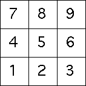

| T7(x,y) = (x/3, y/3) + (0, 2/3) | T8(x,y) = (x/3, y/3) + (1/3, 2/3) | T9(x,y) = (x/3, y/3) + (2/3, 2/3) |
| T4(x,y) = (x/3, y/3) + (0, 1/3) | T5(x,y) = (x/3, y/3) + (1/3, 1/3) | T6(x,y) = (x/3, y/3) + (1/3, 2/3) |
| T1(x,y) = (x/3, y/3) | T2(x,y) = (x/3, y/3) + (1/3, 0) | T3(x,y) = (x/3, y/3) + (2/3, 0) |
| These transformations generate the unit square by dividing it into nine subsquares, each of |
| Here are the length 1 addresses. |
|  |
| Here are the length 2 addresses. |
Return to Phonological analysis.